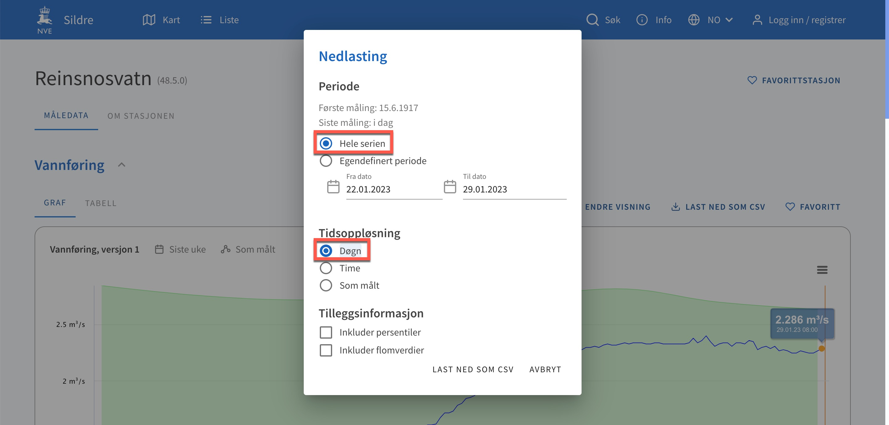
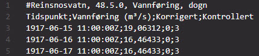
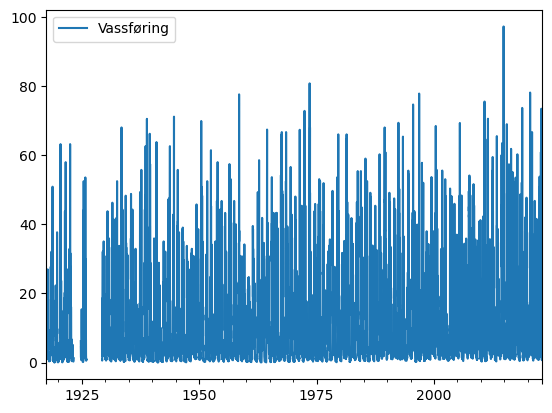
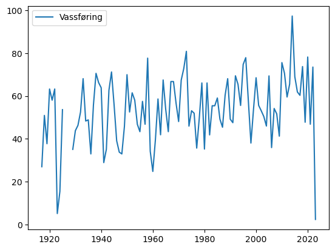
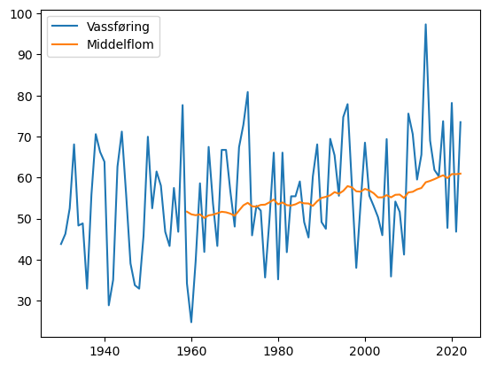
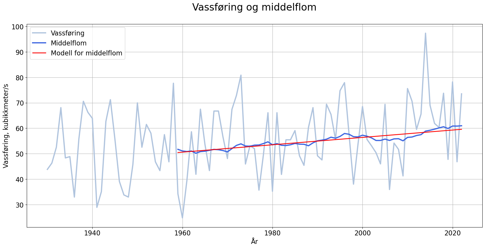
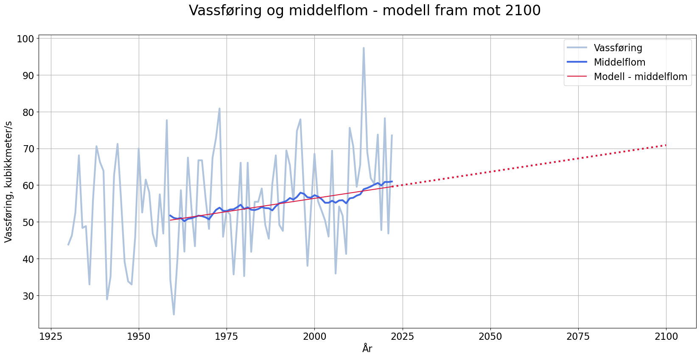
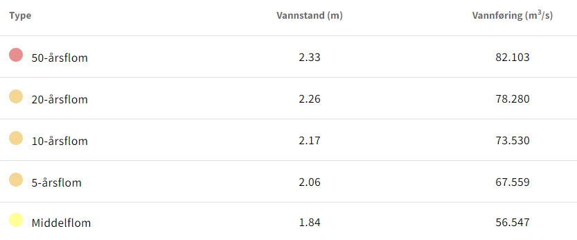
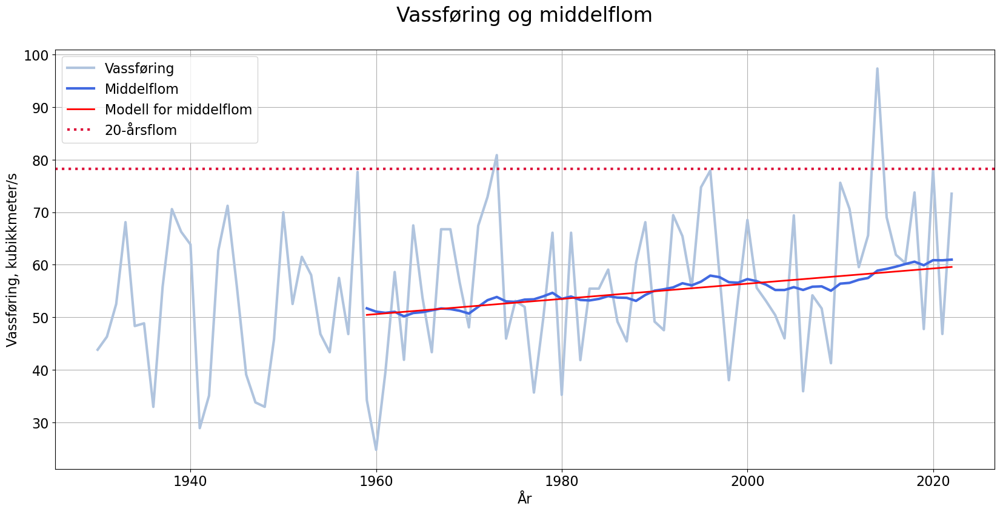
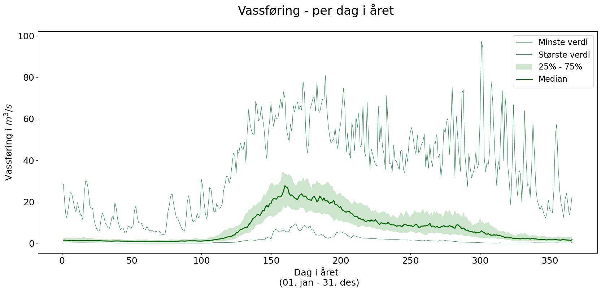

import pandas as pd
import matplotlib.pyplot as plt
import numpy as np
Hydrologiprosjekt i Geofag 1
Her kjem eit døme på korleis ein kan bruka og behandla nokre av dei store hydrologi-datamengdene me har tilgjengeleg i Noreg. Datamaterialet er samla inn av NVE og henta frå Sildre.
📌 I det følgjande dømet nyttar eg vassføringsdata frå Reinsnosvatn
Målestasjonen ligger i Ullensvang i Vestland og er aktiv. Den har vært i drift siden juni 1917 og leverer i dag 3 forskjellige målinger. (sildre.nve.no)
Prosjektet tek altså utgangspunkt i daglege målingar frå 1917!
Tips til nedlasting
1️⃣ Finn deg ei elv på sildre.nve.no
2️⃣ Trykk på last ned som csv
3️⃣ Kryss av på aktuelle instillingar
4️⃣ Last ned

Importere bibliotek
Vassføringsdataa er lasta ned i csv-format. Me bruker pandas for å jobba med dette effektivt. I tillegg vert det litt plotting og matematikk, så me treng pyplot og numpy i tillegg.
Opprette dataramme
CSV-fila med vassføringsdata les me inn i ei dataramme (dataframe). Viss ein tar ein kikk på fila ser ein at det er brukt semikolon for å skilja verdiane, det er to rader før verdiane kjem. Me lagar litt forenkla namn på kolonnene, og les inn data. I tillegg er det nytta komma (og ikkje punktum) som desimalteikn.

df = pd.read_csv(
"vassforing_reinsnos_dogn.csv",
sep = ";",
skiprows = 2,
names = ["dato", "Vassføring", "Korrigert", "Kontrollert"],
parse_dates = True,
decimal=","
)
df.index = pd.to_datetime(df['dato'])
df.index = pd.to_datetime(df.index.date)
df = df.drop(columns = ["dato", "Korrigert", "Kontrollert"])Sjekkar dei nyaste fem målingane i tabellen for å sjå at alt ser ok ut.
df.tail()| Vassføring | |
|---|---|
| 2023-01-24 | 1.299365 |
| 2023-01-25 | 1.593457 |
| 2023-01-26 | 2.128418 |
| 2023-01-27 | 2.322153 |
| 2023-01-28 | 2.324195 |
I tillegg kan me prøva å plotta verdiane i dataramma.
Har med ; for å unngå å visa meldinga <AxesSubplot: >
df.plot();
Me ser her at dette ikkje er spesielt nyttig eller informativt, men grafen viser oss at det på 1920-talet er eit par år utan målingar. Korleis dette kan fiksast kjem me attende til litt seinare.
Middelflom
Middelflommen til ei elv er rekna ut frå den største døgnvassføringa per år over eit lengre tidsrom. Frå NVE/varsom.no finn me denne definisjonen:
En middelflom (normal flom) defineres som gjennomsnittet av høyeste vannføring hvert år i en lang årrekke.
For å rekna ut dette må me altså først finna den maksimale vassføringa per år. Bruker groupby i Pandas for å finne dette.
årleg_vf_maks = df.groupby(by=[df.index.year]).max()
årleg_vf_maks.head()| Vassføring | |
|---|---|
| 1917 | 26.98031 |
| 1918 | 50.93218 |
| 1919 | 37.72713 |
| 1920 | 63.26006 |
| 1921 | 58.04514 |
Plottar den nye dataramma årleg_maks som kun har ei måling per år:
årleg_vf_maks.plot();
På grunn av “holet” i målingane tar me berre med data frå 1930 eller seinare med oss vidare. I tillegg er det vinter (og snø/is) for dataa me har for 2023, så me avgrensar til 2022.
årleg_vf_maks = årleg_vf_maks.loc[1930:2022]
årleg_vf_maks.head()| Vassføring | |
|---|---|
| 1930 | 43.82251 |
| 1931 | 46.29647 |
| 1932 | 52.52979 |
| 1933 | 68.09634 |
| 1934 | 48.32775 |
Me vil finna gjennomsnittleg største årlege vassføring over fleire år. Vel her å sjå på eit gjennomsnitt på 30 år om gongen. Bruker funksjonen rolling og mean i kombinasjon. rolling gjer at me kan gå gjennom dataramma og sjå på dei 30 tidlegare verdiane til kvar rad i tabellen og finna gjennomsnittet (mean) i dette rullande vinduet.
maksvf_og_middelflom = årleg_vf_maks.copy()
maksvf_og_middelflom["Middelflom"] = årleg_vf_maks.rolling(window = 30).mean()Ser på dei første 5 radene
maksvf_og_middelflom.head()| Vassføring | Middelflom | |
|---|---|---|
| 1930 | 43.82251 | NaN |
| 1931 | 46.29647 | NaN |
| 1932 | 52.52979 | NaN |
| 1933 | 68.09634 | NaN |
| 1934 | 48.32775 | NaN |
Ser at dei fem første radene i den nye dataramma er NaN (not a number). Dette skjer fordi ein ikkje kan ta gjennomsnitt av dei siste 30 åra før det har gått 30 år… Sjekkar dei nyaste radene i staden:
maksvf_og_middelflom.tail()| Vassføring | Middelflom | |
|---|---|---|
| 2018 | 73.75180 | 60.571163 |
| 2019 | 47.75206 | 59.893282 |
| 2020 | 78.19958 | 60.860965 |
| 2021 | 46.81937 | 60.837067 |
| 2022 | 73.51824 | 60.972971 |
Plottar dataramma og ser korleis dei nye verdiane ser ut:
maksvf_og_middelflom.plot();
Modellering av middelflom
Ser at trenden er oppadgåande og relativt lineær. Ønsker å laga ein lineær modell. Bruker polyfit frå NumPy.
# åra me har data på middelflom
# frå og med 1959 til men ikkje med 2023
x = np.arange(1959, 2023)
# finn koeffesientane til førstegradspolynomet
a, b = np.polyfit(x, maksvf_og_middelflom["Middelflom"].loc[1959:2022], 1)
# definerer lineær funksjon
def f(x):
return a*x + b
# plottar dataramma
maksvf_og_middelflom.plot(
figsize = (20,9),
grid = True,
fontsize = 16,
linewidth = 3,
color = ["lightsteelblue", "royalblue"]
)
# plottar modellen
plt.plot(
x, f(x),
linewidth = 2,
label = "Modell for middelflom",
color = "red"
)
# pynting av plot
plt.title("Vassføring og middelflom\n", fontsize = 24)
plt.legend(fontsize = 16)
plt.ylabel("Vassføring, kubikkmeter/s", fontsize = 16)
plt.xlabel("År", fontsize = 16)
#plt.savefig("Reinsnos - årleg maksvassføring og middelflom.png", dpi = 300)
plt.show()
Ekstrapolasjon - modell for framtidig middelflom
Me kan bruka trendlinja for middelflommen som modell for å seie noko om korleis utviklinga vil vera i åra framover (om utviklinga held fram som no):
Kode
maksvf_og_middelflom.plot(figsize = (20,9),
grid = True,
fontsize = 16,
linewidth = 3,
color = ["lightsteelblue", "royalblue"]
)
plt.plot(x, f(x),
linewidth = 1.5,
label = "Modell - middelflom",
color = "crimson"
)
# Plottar forlenginga av den lineære modellen
x2 = np.arange(2022, 2101)
plt.plot(x2, f(x2), ":", linewidth = 3, color = "crimson")
# pynting av plot
plt.title("Vassføring og middelflom - modell fram mot 2100 \n", fontsize = 24)
plt.legend(fontsize = 16)
plt.ylabel("Vassføring, kubikkmeter/s", fontsize = 16)
plt.xlabel("År", fontsize = 16)
#plt.savefig("Reinsnos - modellering av middelflom 2100.png", dpi = 300)
plt.show()
Sjekkar opp mot NVE sine flom-data
Frå stasjonsssida til Reinsnosvatn kan me finna data om ulike typar flom.

Ser at verdien for 20-årsflom er 78,28 \(m^3/s\). Plottar inn linja \(y=78,28\) i samme figur som tidlegare. Bruker plt.axhline() for å teikna horisontal linje.
Kode
# åra me har data på middelflom
# frå og med 1959 til men ikkje med 2023
x = np.arange(1959, 2023)
# finn koeffesientane til førstegradspolynomet
a, b = np.polyfit(x, maksvf_og_middelflom["Middelflom"].loc[1959:2022], 1)
# definerer lineær funksjon
def f(x):
return a*x + b
# plottar dataramma
maksvf_og_middelflom.plot(
figsize = (20,9),
grid = True,
fontsize = 16,
linewidth = 3,
color = ["lightsteelblue", "royalblue"]
)
# plottar modellen
plt.plot(
x, f(x),
linewidth = 2,
label = "Modell for middelflom",
color = "red"
)
# plottar 20-årsflom
plt.axhline(
y = 78.28,
color = "crimson",
linewidth = 3,
linestyle = ":",
label = "20-årsflom"
)
# pynting av plot
plt.title("Vassføring og middelflom\n", fontsize = 24)
plt.legend(fontsize = 16)
plt.ylabel("Vassføring, kubikkmeter/s", fontsize = 16)
plt.xlabel("År", fontsize = 16)
#plt.savefig("Reinsnos - årleg maksvassføring og middelflom.png", dpi = 300)
plt.show()
Tips til oppgåver
Plott linjer for dei ulike flom-typane. Kor godt stemmer observasjonane med desse tala?
Kva ligg i omgrepet 20-årsflom?
Hydrogram - vassføring per dag
Denne store tabellen vår med daglege data frå over 100 år kan me gjera mykje gøy med. Me kan t.d. sortera alle observasjonane til dag i året, og sjå korleis vassføringa vanlegvis er gjennom eit år. I koden under gjer me dette, og i tillegg fargelegg me området mellom 25 og 75-persenilen. På denne måten får me fargelagt dei 50% midterste målingane per dag. Det er òg greitt å visa medianen (som blir hydrogrammet) på figuren.
Startar med å sortera den opprinnelege df til dag i året (day of year - doy). Etterpå grupperer me materialet i ein ny tabell.
df['doy'] = df.index.dayofyear
df['år'] = df.index.year
df.head()| Vassføring | doy | år | |
|---|---|---|---|
| 1917-06-15 | 19.06312 | 166 | 1917 |
| 1917-06-16 | 16.46433 | 167 | 1917 |
| 1917-06-17 | 16.46433 | 168 | 1917 |
| 1917-06-18 | 18.67722 | 169 | 1917 |
| 1917-06-19 | 21.97948 | 170 | 1917 |
Lagar ein pivottabell med dag i året som rader og årstal som kolonner
piv = pd.pivot_table(df, index=['doy'],columns=['år'], values=['Vassføring'])
piv.head()| Vassføring | |||||||||||||||||||||
|---|---|---|---|---|---|---|---|---|---|---|---|---|---|---|---|---|---|---|---|---|---|
| år | 1917 | 1918 | 1919 | 1920 | 1921 | 1922 | 1923 | 1924 | 1925 | 1929 | ... | 2014 | 2015 | 2016 | 2017 | 2018 | 2019 | 2020 | 2021 | 2022 | 2023 |
| doy | |||||||||||||||||||||
| 1 | NaN | 0.751369 | 0.520992 | 0.110245 | 0.520992 | 2.268141 | 0.858653 | NaN | 4.303123 | NaN | ... | 4.858096 | 1.869427 | 4.191920 | 28.483190 | 4.161459 | 2.347107 | 12.096400 | 2.466642 | 4.124214 | 2.000038 |
| 2 | NaN | 0.751369 | 0.481094 | 0.095431 | 0.562897 | 2.268141 | 0.751369 | NaN | 4.003652 | NaN | ... | 4.406689 | 3.295648 | 3.810454 | 19.011320 | 3.759124 | 2.669421 | 8.641389 | 2.288357 | 5.344579 | 1.913351 |
| 3 | NaN | 0.701046 | 0.443164 | 0.095431 | 0.606849 | 2.166990 | 0.803893 | NaN | 3.858951 | NaN | ... | 3.952404 | 4.470398 | 3.068896 | 11.995200 | 3.438255 | 2.515568 | 8.580434 | 2.122319 | 6.083396 | 1.827513 |
| 4 | NaN | 0.701046 | 0.407161 | 0.095431 | 0.652886 | 1.973261 | 0.915689 | NaN | 3.717565 | NaN | ... | 3.694488 | 4.407481 | 2.748646 | 8.526679 | 3.053644 | 2.336836 | 7.108252 | 1.954245 | 5.640584 | 1.779285 |
| 5 | NaN | 0.652886 | 0.373045 | 0.110245 | 0.803893 | 1.703600 | 0.915689 | NaN | 3.444615 | NaN | ... | 3.422920 | 4.161712 | 2.613774 | 6.329734 | 2.739008 | 2.265773 | 5.907576 | 1.806864 | 4.668677 | 1.701279 |
5 rows × 104 columns
Utrekningar
Finn ulike verdiar per dag i året over dei 104 åra.
piv["min"] = piv.min(axis = 1)
piv["maks"] = piv.max(axis = 1)
piv["75%"] = piv.quantile(q = 0.75,axis = 1)
piv["median"] = piv.median(axis = 1)
piv["25%"] = piv.quantile(q = 0.25,axis = 1)
piv.head()| Vassføring | min | maks | 75% | median | 25% | ||||||||||||||||
|---|---|---|---|---|---|---|---|---|---|---|---|---|---|---|---|---|---|---|---|---|---|
| år | 1917 | 1918 | 1919 | 1920 | 1921 | 1922 | 1923 | 1924 | 1925 | 1929 | ... | 2019 | 2020 | 2021 | 2022 | 2023 | |||||
| doy | |||||||||||||||||||||
| 1 | NaN | 0.751369 | 0.520992 | 0.110245 | 0.520992 | 2.268141 | 0.858653 | NaN | 4.303123 | NaN | ... | 2.347107 | 12.096400 | 2.466642 | 4.124214 | 2.000038 | 0.110245 | 28.48319 | 2.589138 | 1.381706 | 0.701046 |
| 2 | NaN | 0.751369 | 0.481094 | 0.095431 | 0.562897 | 2.268141 | 0.751369 | NaN | 4.003652 | NaN | ... | 2.669421 | 8.641389 | 2.288357 | 5.344579 | 1.913351 | 0.095431 | 19.01132 | 2.548025 | 1.417153 | 0.652886 |
| 3 | NaN | 0.701046 | 0.443164 | 0.095431 | 0.606849 | 2.166990 | 0.803893 | NaN | 3.858951 | NaN | ... | 2.515568 | 8.580434 | 2.122319 | 6.083396 | 1.827513 | 0.095431 | 11.99520 | 2.491543 | 1.381060 | 0.606849 |
| 4 | NaN | 0.701046 | 0.407161 | 0.095431 | 0.652886 | 1.973261 | 0.915689 | NaN | 3.717565 | NaN | ... | 2.336836 | 7.108252 | 1.954245 | 5.640584 | 1.779285 | 0.095431 | 14.41007 | 2.421806 | 1.275205 | 0.652886 |
| 5 | NaN | 0.652886 | 0.373045 | 0.110245 | 0.803893 | 1.703600 | 0.915689 | NaN | 3.444615 | NaN | ... | 2.265773 | 5.907576 | 1.806864 | 4.668677 | 1.701279 | 0.110245 | 18.95604 | 2.372195 | 1.207931 | 0.728653 |
5 rows × 109 columns
Plottar
# Plottar minimumsverdiar
piv["min"].plot(
figsize = (20, 8),
color = "seagreen",
linewidth = 0.8,
grid = False,
fontsize = 18,
legend = False,
label = "Minste verdi"
)
# PLottar maksimumsverdiar
piv["maks"].plot(
color = "seagreen",
linewidth = 0.8,
grid = False,
fontsize = 18,
legend = False,
label = "Største verdi"
)
# Fargelegg området mellom 25- og 75-persentilane
plt.fill_between(
piv.index,
piv["25%"], piv["75%"],
facecolor='green',
alpha=0.2,
interpolate=True,
label = "25% - 75%"
)
# Plottar medianen
piv["median"].plot(
linewidth = 2,
color = "darkgreen",
label = "Median"
)
# Pyntar på plottet
plt.xlabel("Dag i året \n (01. jan - 31. des)", fontsize = 18)
plt.ylabel("Vassføring i $m^3/s$", fontsize = 18)
plt.title("Vassføring - per dag i året \n", fontsize = 24)
plt.legend(fontsize = 16)
plt.savefig("Reinsnos - vassføring per dag gjennom året.png", dpi = 300)
plt.show()
Oppsummert
Det er mykje kjekt ein kan gjera med vassføringsdata frå NVE. Både det å laga plott som me har gjort over, og arbeida med store datamengder som dette kan erfaringsmessig gje elevane god innsikt i samanhengar og forståing for omgrep i hydrologien.
Tips til undervisinga
Dei elevlaga hydrogramma er eit godt utganspunkt for diskusjonar og utforsking.
1️⃣ Jobb med koden saman med elevane. Lag plotta.
2️⃣ Be elevane om å finna andre elver (ulik storleik, ulik geografisk plassering) og lage eigne plott.
3️⃣ Sjå på ulike hydrogram laga av elevane (utan namn på vassdraget) og ha diskusjon i klassen om kva informasjon som ligg i plotta (Nord/sør/aust/vest? Høgde? Isbre? Snøsmelting/regnflom? Regulering?)
4️⃣ Avslør namn og plassering - korleis stemte det?